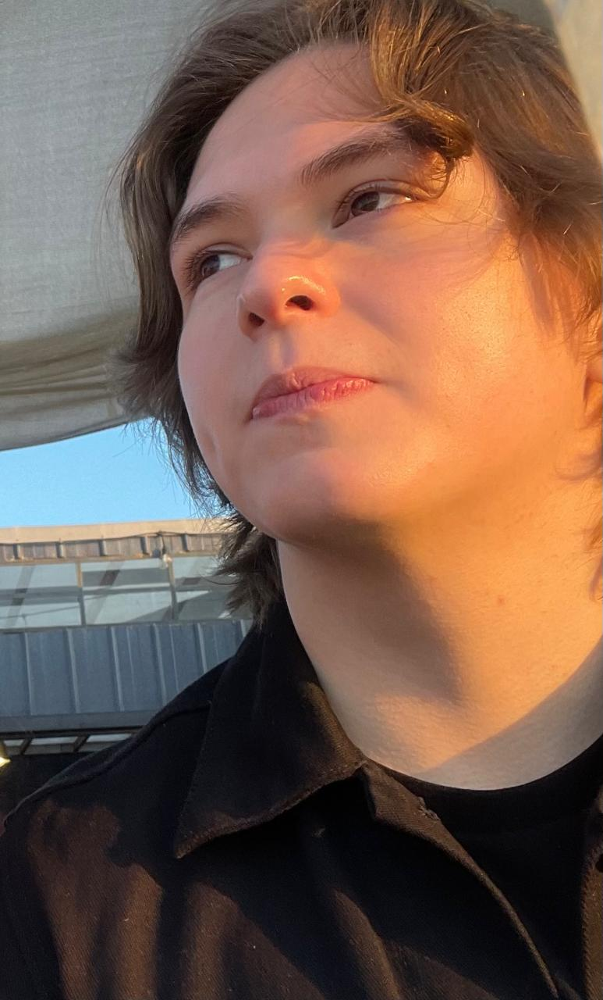

¿Quién Soy?
Soy un desarrollador multimedia con un enfoque principal en el diseño y desarrollo de videojuegos porque encuentro en este medio la convergencia perfecta entre narrativa, diseño visual, tecnología e interactividad. Mi formación en diseño gráfico digital me permite construir experiencias visuales sólidas y coherentes, mientras que mi interés por la programación y los motores de juego me impulsa a transformar conceptos creativos en sistemas jugables funcionales. Más que solo crear imágenes o código, busco diseñar mundos, mecánicas y experiencias inmersivas donde cada decisión estética y técnica tenga un propósito claro dentro de la experiencia del jugador.
Sobre Mí
Daniel Morales nace en Tijuana, Baja California México en el año 2003, desde pequeño presentó interés en los videojuegos de fantasía medieval y los deportes de contacto, cumplió su servicio social del bachillerato como maestro de artes marciales mixtas en el club de Niños y Niñas plantel Loma Dorada en Tijuana. En el 2020 entró a la carrera de Ingeniería en Software en CETYS Universidad Campus Ensenada, en el año 2022 co-escribió y actuó en el cortometraje de ficción y suspenso “Dobles” en el taller de de cortometraje impartido por la directora de cine Nadia Islas Cital, en ese mismo año ganó el primer lugar en la categoría pre-alfa de la Expoingeniería #34 con sede en CETYS Universidad Campus Ensenada con el proyecto: “Sitio Web para Expoingeniería”. Actualmente estudia Ingeniería en Diseño Gráfico Digital en CETYS Universidad Campus Ensenada, es vicepresidente del club “IDGD & Dragons”. Persigue una carrera en el área de diseño y desarrollo de videojuegos, se encuentra trabajando en el videojego survival horror “Tlalocan 2099” en su fase de pre-producción.
Portafolio
Algunos de mis proyectos recientes.